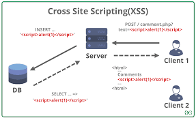
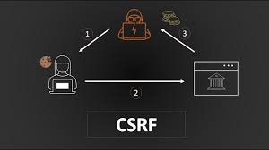
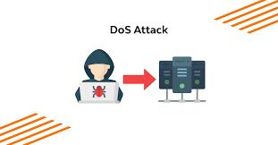
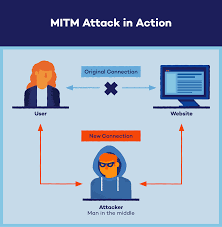
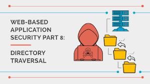
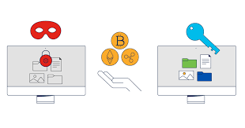
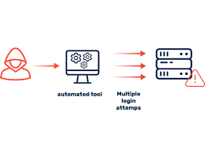

Task 3: Web Attacks
| Name | Web Attacks |
|---|---|
SQL Injection

|
SQL Injection is a code injection technique that might destroy your database.
It is one of the most common web hacking techniques. Attackers can use it to bypass login
algorithms, access sensitive information, or modify database entries. Reference: OWASP: SQL Injection |
| Cross-Site Scripting (XSS)  |
XSS allows attackers to inject client-side scripts into webpages viewed by other users.
It can steal user cookies, session tokens, or other sensitive data. This vulnerability
is often caused by insufficient input validation. Reference: OWASP: XSS |
| Cross-Site Request Forgery (CSRF)  |
CSRF tricks a user’s browser into sending unauthorized commands to a website.
It exploits a user's authenticated session to perform malicious actions. Proper use of
anti-CSRF tokens can mitigate this threat. Reference: OWASP: CSRF |
| Denial of Service (DoS)  |
A DoS attack floods a server with excessive requests or data, causing it to slow down
or crash. It can prevent legitimate users from accessing a service. Distributed DoS (DDoS)
is a more powerful variant using multiple compromised systems. Reference: Cloudflare: DoS |
| Man-in-the-Middle (MitM)  |
MitM attacks occur when an attacker intercepts communications between two parties.
The attacker can read or modify the data in transit. Using strong encryption (HTTPS, VPN) can
help mitigate MitM attacks. Reference: Imperva.com |
| Directory Traversal  |
Directory traversal exploits inadequate security checks to access restricted directories
and files. Attackers can read or execute files outside the web root folder. Proper
input validation and path sanitization can mitigate these attacks. Reference: OWASP: Path Traversal |
| Ransomware  |
Ransomware encrypts a victim's data and demands payment to restore access. It often
spreads through malicious attachments or exploit kits. Regular backups and caution
with email attachments can help mitigate the impact. Reference: CISA: Ransomware |
| Phishing |
Phishing involves fraudulent attempts to obtain sensitive information by impersonating
a trustworthy entity. Attackers commonly use emails or fake login pages. User awareness
and spam filters are key defenses. Reference: Phishing.org |
| Brute Force  |
Brute force attacks repeatedly try different username/password combinations until
they succeed. Strong passwords and account lockouts reduce the success of brute force.
Attackers may use dictionaries or rainbow tables to speed up guessing. Reference: OWASP: Brute Force |
| Zero-Day Exploit |
Zero-day exploits target undisclosed or unpatched vulnerabilities. They are highly
dangerous because no official fix is available when they are first used. Keeping
software updated and monitoring threat intelligence can help mitigate zero-day risks. Reference: CISA: Zero-Day Exploit |